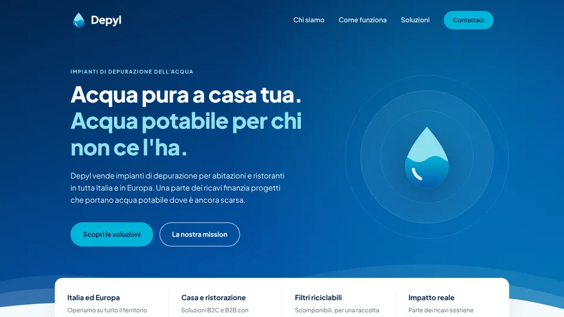

Sviluppo
Depyl · progetto Intro Sviluppo
Acqua pura per te, acqua potabile per tutti
Landing page responsive per un'azienda che vende impianti di depurazione dell'acqua e finanzia progetti di acqua potabile nel mondo. HTML semantico e CSS scritti a mano, con layout in Flexbox e Grid.
- HTML5
- CSS3
- Flexbox e Grid
- Responsive